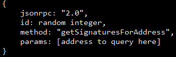
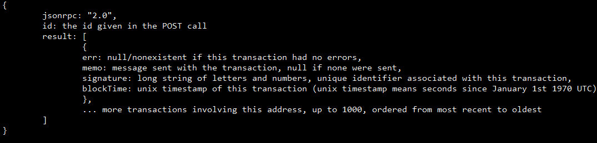

Congratulations! Thanks to your investigation, the IMF destroyed the supercomputer that powered The Entity.
However, a secret organization is believed to have transferred a smaller version of The Entity to a second computer.
This new AI is called The Mini Entity.
This secret organization gives orders via transactions on the Solana blockchain.
Addresses interact with the Solana blockchain by sending or being a part of transactions.
Each transaction has a signature made up of various letters and numbers, and a timestamp of when it succeeds.
To get all transactions for which an address was involved in, use the following data in a POST call with the same headers and URL as the previous missions.

The response will look like this:

The transaction containing the order given by this secret organization involves the address CxfQnuAbZ5fLcGueVjwAL7FcuFhu23CCetkj1ijWJEpJ
Which secret organization has The Mini Entity?